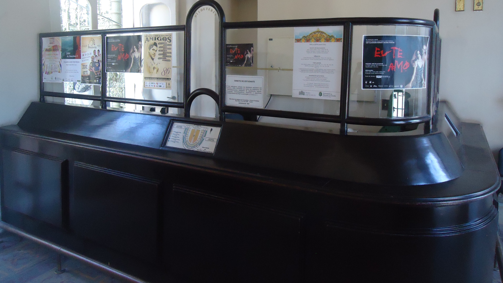

Quem decide que uma peça de teatro é para maiores de 14 anos?

A faixa etária impressa no cartaz de uma peça de teatro não passou pela mesa de nenhum servidor federal antes da estreia. Quem escreveu aquele número foi a produção do espetáculo.
Não existe liberação prévia para apresentação ao vivo no Brasil. O Ministério da Justiça e Segurança Pública entra depois: monitora, pede material e pode trocar a classificação, e a nova vale para as sessões seguintes.
A regra está na Portaria MJSP nº 1.048, de 15 de outubro de 2025, publicada no Diário Oficial da União do dia 16. Ela revogou expressamente, no art. 94, a Portaria MJSP nº 502, de 23 de novembro de 2021, que regia a classificação indicativa até então. Está em vigor desde 17 de novembro de 2025 na maior parte de seus dispositivos, e desde 17 de março de 2026 nos arts. 48 a 57, pelo art. 95. O texto foi conferido em 8 de agosto de 2026 no PDF oficial publicado pelo ministério.
Quem escreve o número no cartaz?
A norma chama isso de autoclassificação. O art. 5º relaciona o que se classifica assim, e o teatro está no inciso III.
"Serão classificados pelo sistema de autoclassificação, com dispensa de inscrição processual, sujeitos ao monitoramento e à alteração determinada pelo Ministério da Justiça e Segurança Pública: [...] III - as exibições ou apresentações ao vivo, abertas ao público, tais como as circenses, as teatrais, os shows musicais, as exposições e as mostras de artes visuais", diz o texto da portaria.
O art. 63 repete a regra para as diversões e os espetáculos públicos, e o art. 65 nomeia o responsável: o organizador da apresentação. Cabe a ele exibir os símbolos, prestar as informações obrigatórias e cuidar do acesso de crianças e adolescentes.
O § 2º do art. 5º encerra a dúvida. As obras ali listadas "não necessitam de confirmação do Ministério da Justiça e Segurança Pública para serem exibidas ou apresentadas".
Quem classifica ainda não tem régua própria. O art. 64 manda o setor usar o Guia Prático de Audiovisual, Aplicativos e Jogo de Interpretação de Personagem "até que seja criado um guia prático próprio para o setor". A conta corre por quatro eixos, fixados no art. 12: sexo e nudez, violência, drogas e interatividade. O quarto é novidade de 2025, porque a portaria revogada trabalhava com três. Nova também é a faixa dos seis anos, que levou as categorias de seis para sete.
A definição ignora o preço do ingresso. Pelo art. 3º, inciso XXXIV, a apresentação ao vivo aberta ao público é "qualquer espetáculo ou evento com acesso público, com ou sem ônus". Uma temporada infantil gratuita, como a de Procurando Luiz no Teatro Arthur Azevedo, carrega a mesma obrigação de um musical de ingresso caro, cuja operação o FOYER destrinchou em quanto custa montar um musical no Brasil.
O que o ministério faz depois da estreia
Monitora. O § 3º do art. 5º permite reclassificar a obra quando o ministério identifica "inconsistências ou avaliações imprecisas", e a classificação nova passa a ser vinculante para as apresentações futuras. O § 1º do art. 65 dá dois instrumentos ao órgão: pedir ao responsável o material do espetáculo e fazer monitoramento in loco.
Publicada a decisão, o responsável é notificado e tem até cinco dias para trocar a informação, pelo § 1º do art. 16.
O que o ministério não pode fazer está no art. 9º, com remissão ao art. 5º, inciso IX, da Constituição: proibir a exibição e determinar corte de cena.
Dá para saber, olhando o cartaz, quem fez a conta. Os símbolos da autoclassificação levam a letra A na frente, pelo art. 18: AL, A6, A10, A12, A14, A16 e A18. Depois que o ministério confirma a faixa, a letra cai, pelo art. 17.
Dá para levar uma criança a uma peça de 14 anos?
Na maior parte dos casos, sim. Quem responde é o art. 10.
Nos espetáculos classificados até 16 anos, a portaria admite a entrada de adolescentes a partir de 12 anos e de crianças a partir de 10. A condição é a presença do responsável ou de acompanhante autorizado por ele, ou uma autorização escrita assinada pelo responsável. Criança com menos de 10 anos entra apenas acompanhada dos pais ou do responsável. É o parágrafo único do art. 75 do Estatuto da Criança e do Adolescente, a Lei 8.069, de 13 de julho de 1990.
O 18 anos é o único caso de porta fechada. Ali o piso é 16 anos, e ainda assim com responsável presente ou autorização escrita.
Responsável não se resume a pai e mãe. O § 2º do art. 10 lista avós, padrastos, irmãos, tios, primos, tutores, curadores e detentores da guarda, com documento do vínculo.
Onde o aviso tem que estar
O art. 13 obriga a exibir o aviso de classificação etária. Salas de cinema e espetáculos abertos ao público estão dispensados de mostrá-lo durante a apresentação. O § 1º diz onde ele precisa aparecer: "nos pontos de venda de bilhetes e nos locais de acesso direto ao produto, diversão ou espetáculo público, tais como lojas e portões de entrada". Bilheteria e portaria, em linguagem de teatro. As perguntas frequentes do ministério repetem a exigência.
É na bilheteria que o público resolve duas contas de uma vez: ali se apresenta o documento da meia-entrada e ali a faixa etária tem de estar visível.
Descumprir é infração administrativa. O art. 13 remete aos arts. 252 e 254 do Estatuto, e o primeiro pune quem deixa de afixar a informação na entrada. O art. 253 alcança outra conduta: anunciar peça teatral sem indicar o limite de idade. A obrigação de afixar não nasceu em 2025. Está no parágrafo único do art. 74 do Estatuto, escrito em 1990.
Enquanto o guia próprio do setor não sai, o número do cartaz continua nascendo dentro da produção. Ele vale desde a primeira sessão. Vale até o ministério dizer outro.
Perguntas rápidas
Quem define a classificação indicativa de uma peça de teatro?
A própria produção, pela autoclassificação do art. 5º, inciso III, da Portaria MJSP nº 1.048/2025. O organizador do espetáculo responde por ela, pelo art. 65.
O Ministério da Justiça pode mudar a faixa etária depois da estreia?
Pode. O § 3º do art. 5º autoriza a reclassificação quando o monitoramento aponta inconsistência, e a nova vale para as sessões seguintes.
Uma criança de 8 anos pode assistir a uma peça de 14 anos?
Pelo art. 10, sim, desde que acompanhada dos pais ou do responsável. A exigência vem do parágrafo único do art. 75 do Estatuto da Criança e do Adolescente.
Como saber se quem classificou foi a produção ou o ministério?
Pelo símbolo. A autoclassificação usa a letra A na frente, como em A14, pelo art. 18. A definitiva sai sem a letra, pelo art. 17.